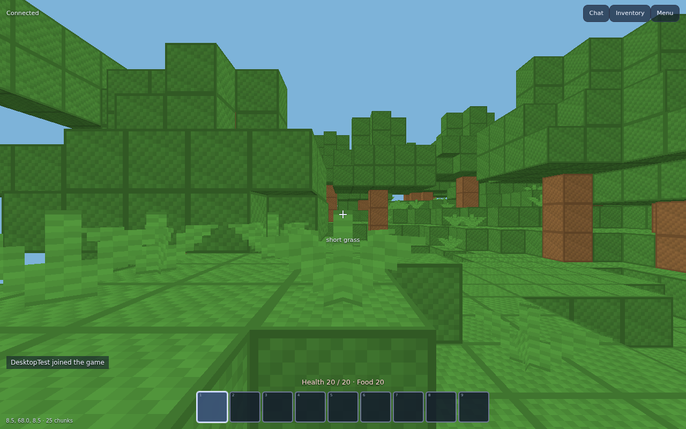
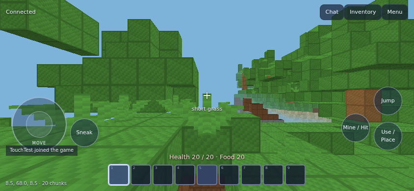

Step into the world
Stream chunks, explore terrain, and see block updates as they arrive. WebGL2 draws the world; a worker prepares its geometry.
LIVE WORLDYour server.
Your next adventure.
Lapis Obsidian Client brings live block worlds to an HTML5 frontend, with a local bridge bundled right in.
Build & play Read the docs
A standalone client for the Lapis Obsidian server. Built around actual server data, from the first chunk to your next placed block.
Stream chunks, explore terrain, and see block updates as they arrive. WebGL2 draws the world; a worker prepares its geometry.
LIVE WORLDWalk, jump, mine, place, chat, and manage your inventory. Your server stays in charge of what happens.
CORE GAMEPLAYThe launcher starts an authenticated bridge on your own device. Connect to your supported server without setting up a separate proxy.
BUNDLED BRIDGEOne frontend, two ways to move. Desktop controls are ready for play; the touch interface supports movement, looking, and actions together.
Touch controls are browser-tested. Native Android/iOS packages and physical-device validation are not yet included.

Use Node.js 22.12 or later and a WebGL2 browser to build from source. The launcher handles the local bridge automatically.
git clone https://github.com/aksulightning/lapisobsidian.git
cd lapisobsidian
git checkout testing-client
cd client
npm ci
npm run devWindows, macOS & Linux artifacts are attached to successful runs.
GitHub sign-in is required to download artifacts; builds expire after 14 days.
This is the project website. To play, launch the standalone client on your device. Browsers cannot open the server’s TCP connection directly, so the launcher supplies an authenticated local bridge. No public relay is required.
The unencrypted, uncompressed offline server from this repository’s testing branch, protocol 772. Arbitrary servers, online account authentication, and compressed connections are not supported.
Block and entity models, lighting, survival timing, and fluids are simplified. Sound and advanced item components are not implemented. Native mobile packages are not included, and preferences do not persist across new launcher ports. See the full limitations.
Yes. Work against testing-client, keep protocol behavior tied to the reference server, and include real-server tests for packet changes. The client is GPL-3.0-only and uses original replacement textures. Start with the contribution notes.